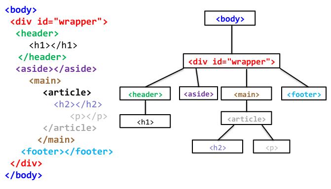
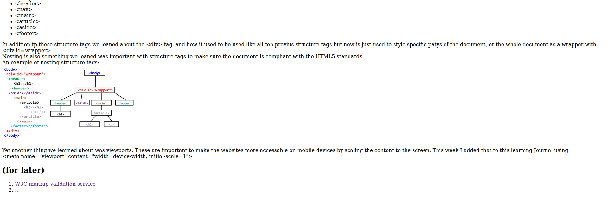

Weekly Posts
Week 1: Intro to programming
Week one was a basic intorduction to web development, introducing some of the tags and the web standards.
we also learned how to setup a css style sheet for later when we add css to this page
<link href="style.css" rel="stylesheet" type="text/css">
Also in week one we setup brighton domains ready to start uploading the progress of our sites.
In this week we started to learn about the basic tags of HTML 5, and what tags are part of old standards. Some examples of tags that were part of those old standards are:
All of these have replaced with css formating.
We also learned about the different ways some tags work. For example tags like <strong> or <p> need closing tags whereas some tags like <br> or <img> dont need closing. In addition, some elements are block elements, meaning they make a new line, and some are inline elements, meaning they happen within a line.
Week 3: Document structure
In week 3 we learned about document structure and why its important.
We learned aboult the multitude of stucture tags
- <body>
- <header>
- <nav>
- <main>
- <article>
- <aside>
- <footer>
In addition tp these structure tags we leaned about the <div> tag, and how it used to be used like all teh previus structure tags but now is just used to style specific patys of the document, or the whole document as a wrapper with <div id=wrapper>.
Nesting is also something we leaned was important with structure tags to make sure the document is compliant with the HTML5 standards.
An example of nesting structure tags:

Yet another thing we learned about was viewports. These are important to make the websites more accessable on mobile devices by scaling the contont to the screen. This week I added that to this learning Journal using
<meta name="viewport" content="width=device-width, initial-scale=1">
Now that 3 weeks of the modual have passed, i have taken screenshots of the current state of the site as it stands to keep a record of the progress of the site. Pictured below is the site as of 26 Oct 2023

a problem as you can see with the page is that is spans across way to far, this will be one of the first things I fix during week 4.